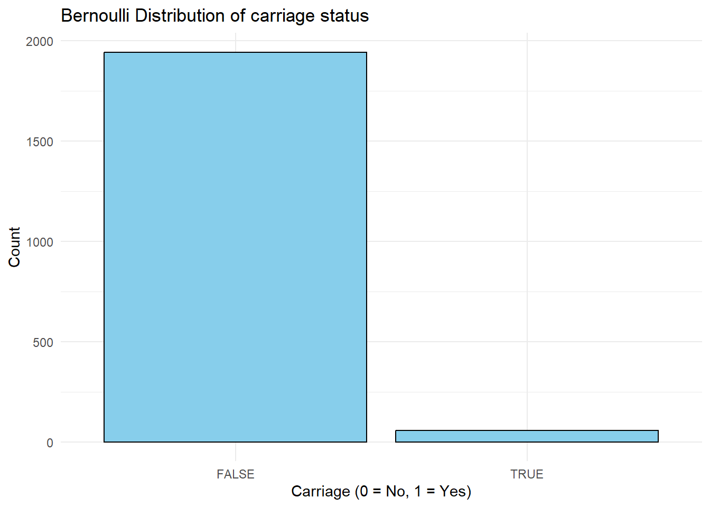
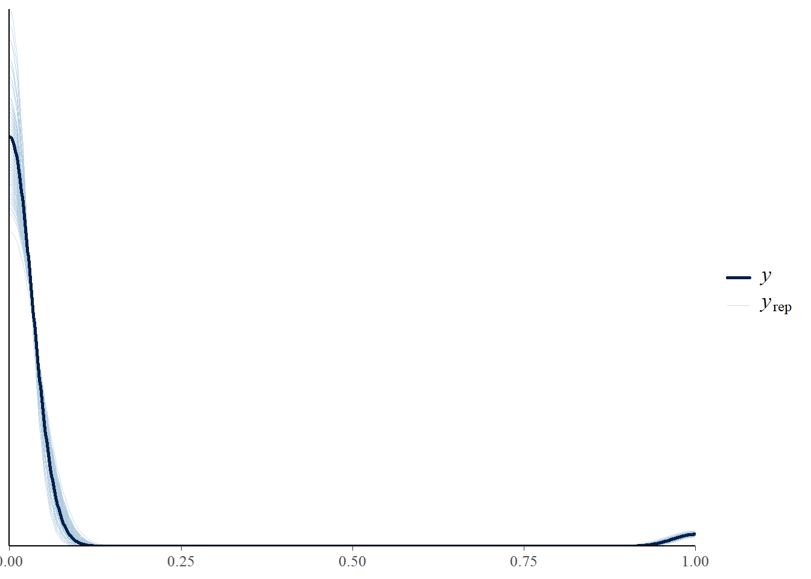
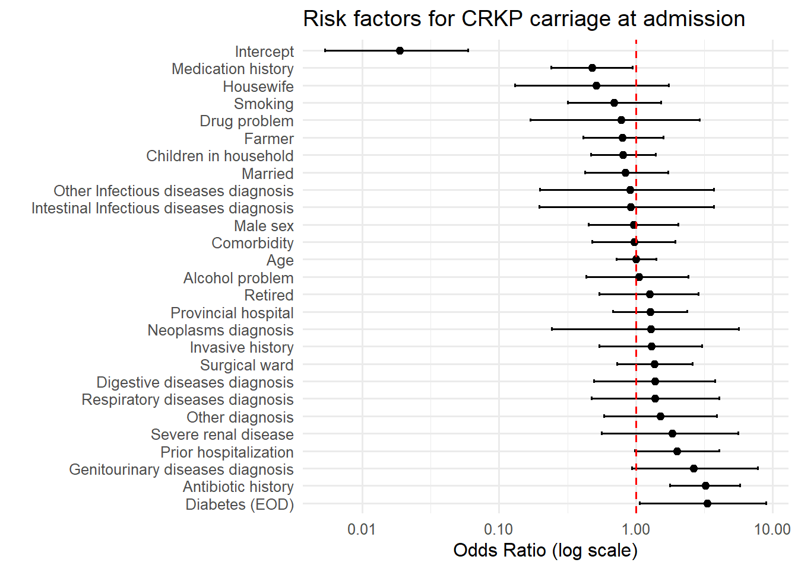
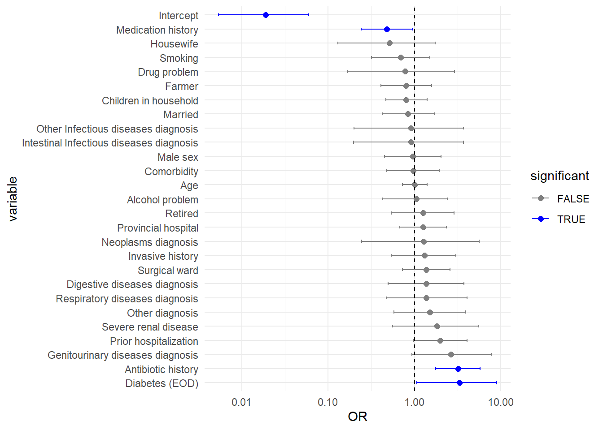
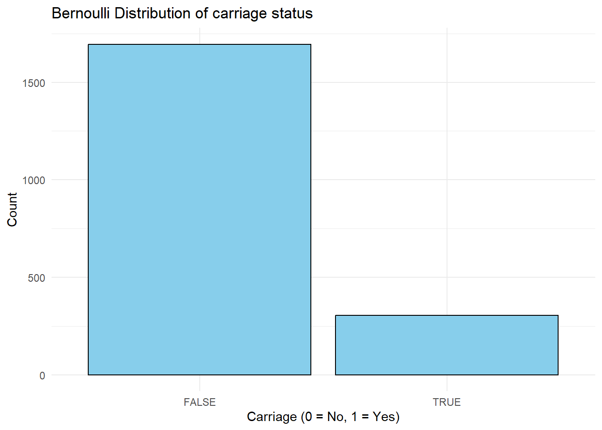
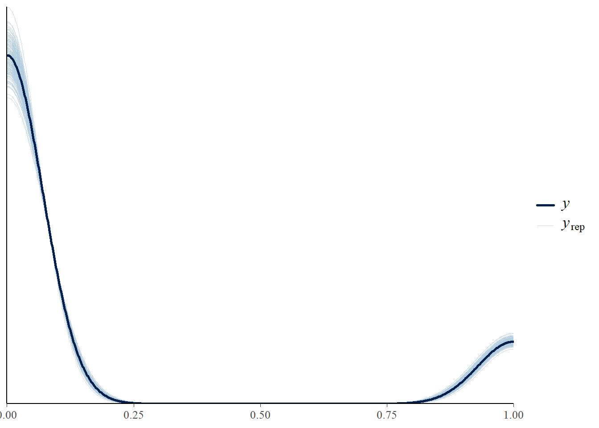
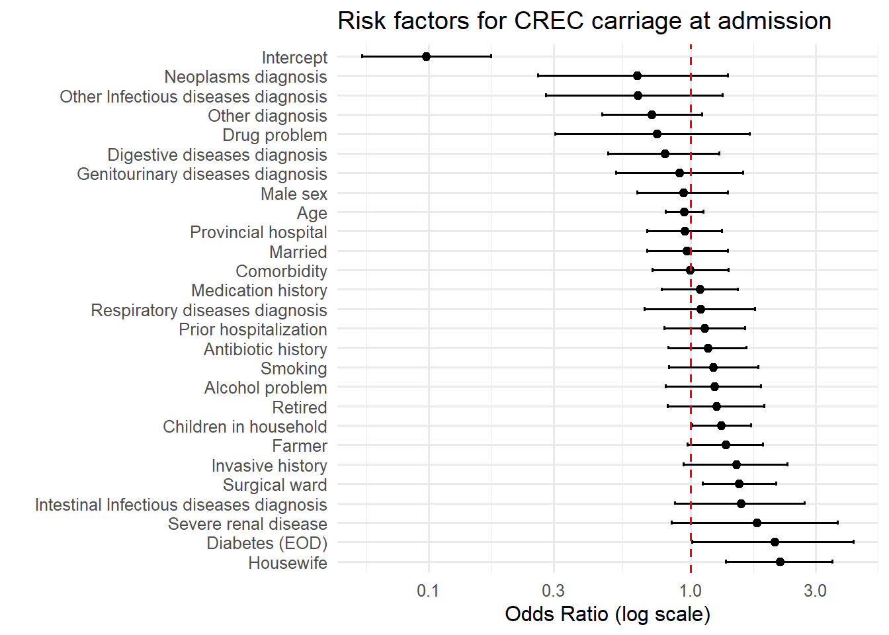
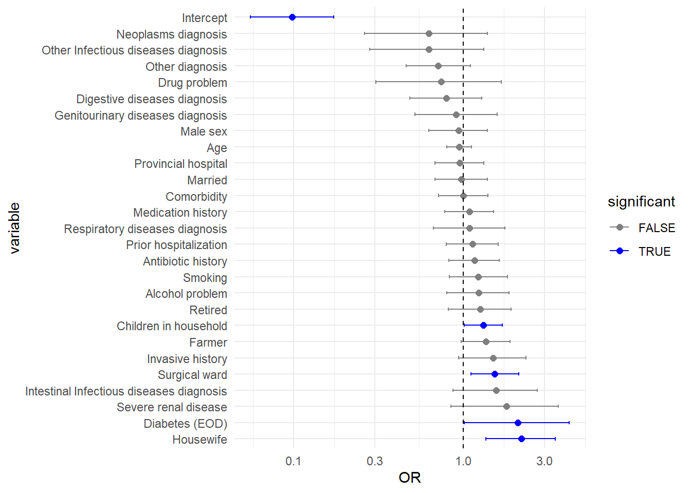

CRF_file <- "16-12-2025-_60HN_PATIENT_P1_Data.xls"CRKP Admission Risk Factors BRMS MODEL
Constants
CRF file:
MALDI-TOF file:
malditof_file <- "60HN_ID_MALDITOF_confirmation_20251128.xlsx"The dates of discharge of the patients who did no provide any sample at discharge:
no_sample_discharge_dates <- "60HN - DischargeDate_no_discharge_sample_27Nov25.xlsx"Bacteria to exclude from the analysis:
non_CRE <- c("Acinetobacter baumannii", "Aeromonas caviae", "Aeromonas hydrophila",
"Aeromonas veronii", "Enterococcus faecium", "Cupriavidus gilardii",
"Pseudomonas putida")The diseases categories:
id_intestinal <- c("A04", "A04.8", "A04.9", "A05.9", "A06.4", "A08.0", "A08.5", "A09",
"A09.0", "A09.9")
id_other <- c("A15.0", "A15.3", "A16.2", "A41", "A41.5", "A41.8", "A41.9", "A48",
"A49.9", "A79.8", "A79.9", "A93", "A94", "A97", "B00.1", "B01", "B01.2",
"B01.8", "B02", "B02.7", "B02.8", "B05", "B05.2", "B05.8", "B05.9",
"B17", "B18.1", "B18.2", "B34.9", "B83.8")
neoplasms <- c("C18", "C18.9; K56.6", "C20", "C22", "C22.9", "C34.9", "C41", "C61",
"C67.9", "C70.0", "C91.9", "C92.2", "C95.0", "D12.0", "D17", "D21",
"D21.9", "D23", "D23.9", "D27", "D37.4", "D38.1", "D40.0", "D44.0",
"D48.1")
circulatory_diseases <- c("I10", "I10-E11-E25-I69", "I10; H81", "I11.9", "I12.5",
"I18", "I20", "I20.0", "I20.8", "I21", "I21.4", "I21.9",
"I24.0", "I25", "I25.2", "I25.5", "I48", "I48.0", "I48.2",
"I50", "I50.9", "I61", "I63", "I63.8", "I64", "I67",
"I67-I10", "I67 - I10", "I69.4", "I70.2", "I80", "I87.2",
"I88.8", "I92.9", "I95", "I99")
respiratory_diseases <- c("J01", "J01.9", "J02", "J02.9", "J04.0", "J06", "J06.9",
"J09", "J10.1", "J10.8", "J11", "J11.1", "J11.8", "J15",
"J15.9", "J16", "J17.1", "J18", "J18-I20.2", "J18.0",
"J18.1", "J18.8", "J18.9", "J20", "J20.9", "J40", "J42",
"J44", "J44.0", "J44.1", "J44.9", "J45", "J90", "J96.0",
"J96.9", "J96/18")
digestive_diseases <- c("K11.2", "K12.3", "K21", "K21.0", "K21.9", "K22.6", "K25",
"K25.0", "K25.3", "K25.9", "K26.0", "K27", "K27-J20", "K27.0",
"K27.3", "K27.9", "K29", "K29.0", "K29.1", "K29.2", "K29.6",
"K29.9", "K30", "K35", "K35.1", "K35.3", "K35.5", "K35.8",
"K35.9", "K36", "K40", "K40.9", "K42", "K50", "K52.3", "K52.9",
"K56", "K56.4", "K56.6", "K57.0", "K57.3", "K57.9", "K58",
"K58.0", "K59.1", "K60.3", "K61.0", "K61.2", "K62.1", "K62.5",
"K63", "K63.1", "K63.5", "K64", "K64.2", "K64.3", "K64.8",
"K65", "K71.2", "K71.6", "K72.0", "K72.2", "K73", "K74",
"K74.0", "K74.1", "K74.2", "K74.6", "K75.8", "K77", "K78.6",
"K80", "K80.0", "K80.1", "K80.2", "K80.3", "K80.4", "K80.8",
"K81", "K81.0", "K83", "K83.0", "K85", "K85.0", "K85.8",
"K85.9", "K86.1", "K92", "K92.2", "K92.8", "K92.9")
genitourinary_diseases <- c("N00", "N13.2", "N13.3", "N13.6", "N17", "N17.9", "N18",
"N18.4", "N18.5", "N18.9", "N19", "N20", "N20.0", "N20.1",
"N20.1, N23, N20.0, K21, M47", "N20.2", "N21.0", "N21.1",
"N23", "N28", "N30.0", "N30.8", "N32.0", "N34.1", "N39.0",
"N40", "N43.2", "N45", "N47", "N48.1", "N70")The anti-microbials categories:
cefoperazone <- c("Cefoperazol","Cefoperazole", "Cefoperazon", "Cefoperazone")
ampicill_sulb <- "Senitram"
cefamandol <- c("Cefamandol", "Cefemandol")
cefo_sulb <- "Vitabactam"
cefazolin <- "Cefazolin"
cefprozil <- "Cefprozil"
cefradin <- "Cefradin"
ceftizoxime <- c("Ceftizoxim", "Ceftizoxime", "Ceftizoxom", "Ceftrizoxim")
cefmetazol <- "Cefmetazol"
ticarcillin_acid_clavulan <- c("Ticarcillin + Acid clavulanic",
"Ticarcillin + Clavulanic",
"Ticarcillin/acid clavulanic")Number of seconds in 1 day:
spd <- 86400The path to the data folder:
if (grepl("arc|hoisy", Sys.getenv("USER"))) {
path2data <- paste0("~/Library/CloudStorage/OneDrive-OxfordUniversityClinical",
"ResearchUnit/GitHub/HuongVTL/CRE-gut-acquisition/")
} else {
path2data <- paste("C:/Users/huongvtl/OneDrive - Oxford University Clinical",
"Research Unit/60HN CRE transmission manuscript/")
}Packages
Required packages:
required <- c("gmodels", "lsmeans", "lme4", "glmmLasso", "stringr", "magrittr",
"readxl", "rlang", "tidyr", "purrr", "dplyr", "brms", "ggplot2", "tidyverse","tidybayes", "bayesplot", "loo", "posterior", "flextable", "officer")Installing those that are not installed yet:
to_install <- required[! required %in% installed.packages()[,"Package"]]
if (length(to_install)) install.packages(to_install)Loading the packages for interactive use:
invisible(sapply(required, library, character.only = TRUE))Functions
Not in:
"%ni%" <- Negate("%in%")A function that adds the path of the data folder to a file name:
make_path <- function(file) paste0(path2data, file)Tuning read_excel():
read_excel2 <- function(file, ...) read_excel(make_path(file), ...)Tuning the merge() function:
merge2 <- function(...) merge(..., by = "USUBJID", all = TRUE)Tuning the difftime() function:
duration <- function(from, to) difftime(to, from, units = "days") + 1Tuning the starts_with() function:
starts_with2 <- function(...) starts_with(..., ignore.case = FALSE)CRF data
Loading the CRF data:
CRF <- c("SCR", "ADM", "DEMO_HIS", "DEMO_HIS_HISTORY_GRID", "DIS", "ANT",
"ANT_ANB_HOSP_GRID") |>
set_names() |>
map(read_excel2, file = CRF_file) |>
map(filter, entry == 2)Warning: Expecting logical in P1142 / R1142C16: got 'công ty'Warning: Expecting logical in P1143 / R1143C16: got 'Công ty'Warning: Expecting logical in AS1278 / R1278C45: got '3'Warning: Expecting logical in AS1279 / R1279C45: got '3'Warning: Expecting logical in P1346 / R1346C16: got 'TNGT, Quốc lộ 30'Warning: Expecting logical in P1347 / R1347C16: got 'TNGT quốc lộ 30'Warning: Expecting logical in P1362 / R1362C16: got 'TNGT'Warning: Expecting logical in P1363 / R1363C16: got 'TNGT'Warning: Expecting logical in AS1463 / R1463C45: got '3'Warning: Expecting logical in P1640 / R1640C16: got 'Ngoài đường'Warning: Expecting logical in P1641 / R1641C16: got 'Ngoài đường'Warning: Expecting logical in P1644 / R1644C16: got 'tai nạn ngoài đường'Warning: Expecting logical in P1645 / R1645C16: got 'Tai nạn ngoài đường'Warning: Expecting logical in AS2020 / R2020C45: got '3'Warning: Expecting logical in AS2252 / R2252C45: got '3'Warning: Expecting logical in AS2262 / R2262C45: got '3'Warning: Expecting logical in AS2293 / R2293C45: got '3'Warning: Expecting logical in AS2484 / R2484C45: got '3'Warning: Expecting logical in AS2485 / R2485C45: got '3'Warning: Expecting logical in AS2526 / R2526C45: got '3'Warning: Expecting logical in AS2527 / R2527C45: got '3'Warning: Expecting logical in AS2556 / R2556C45: got '3'Warning: Expecting logical in AS2557 / R2557C45: got '3'Warning: Expecting logical in AS2568 / R2568C45: got '3'Warning: Expecting logical in AS2569 / R2569C45: got '3'Warning: Expecting logical in AS2580 / R2580C45: got '3'Warning: Expecting logical in AS2581 / R2581C45: got '3'Warning: Expecting logical in AS2588 / R2588C45: got '3'Warning: Expecting logical in AS2589 / R2589C45: got '3'Warning: Expecting logical in AS2598 / R2598C45: got '3'Warning: Expecting logical in AS2599 / R2599C45: got '3'Warning: Expecting logical in AS2600 / R2600C45: got '3'Warning: Expecting logical in AS2601 / R2601C45: got '3'Warning: Expecting logical in P2794 / R2794C16: got 'TNGT'Warning: Expecting logical in P2795 / R2795C16: got 'Tai nạn giao thông'Warning: Expecting logical in P2798 / R2798C16: got 'TNGT'Warning: Expecting logical in P2799 / R2799C16: got 'Tai nạn giao thông'Warning: Expecting logical in P2816 / R2816C16: got 'TNGT'Warning: Expecting logical in P2817 / R2817C16: got 'Tai nạn giao thông'Warning: Expecting logical in AS2820 / R2820C45: got '3'Warning: Expecting logical in AS2821 / R2821C45: got '3'Warning: Expecting logical in AS3412 / R3412C45: got '1'Warning: Expecting logical in AS3418 / R3418C45: got '1'Warning: Expecting logical in AS3445 / R3445C45: got '1'Warning: Expecting logical in AS3455 / R3455C45: got '1'Warning: Expecting logical in AS3542 / R3542C45: got '1'Warning: Expecting logical in P3634 / R3634C16: got 'Khoa CSSKSS'Warning: Expecting logical in P3635 / R3635C16: got 'Khoa CSSKSS'Warning: Expecting logical in P3788 / R3788C16: got 'TNGT'Warning: Expecting logical in P3789 / R3789C16: got 'TNGT'Warning: Expecting logical in P3806 / R3806C16: got 'TNGT'Warning: Expecting logical in P3807 / R3807C16: got 'TNGT'Warning: Expecting logical in P3808 / R3808C16: got 'TNGT'Warning: Expecting logical in P3809 / R3809C16: got 'TNGT'Warning: Expecting logical in P3816 / R3816C16: got 'TNGT'Warning: Expecting logical in P3817 / R3817C16: got 'TNGT'Warning: Expecting logical in P3826 / R3826C16: got 'TNGT'Warning: Expecting logical in P3827 / R3827C16: got 'TNGT'Warning: Expecting logical in P3846 / R3846C16: got 'TNGT'Warning: Expecting logical in P3847 / R3847C16: got 'Tai nạn giao thông'Warning: Expecting logical in P3852 / R3852C16: got 'tai nạn lao động'Warning: Expecting logical in P3853 / R3853C16: got 'Tai nạn lao động'Warning: Expecting logical in P3854 / R3854C16: got 'TNGT'Warning: Expecting logical in P3855 / R3855C16: got 'Tai nạn giao thông'Warning: Expecting logical in P3864 / R3864C16: got 'TNGT'Warning: Expecting logical in P3865 / R3865C16: got 'Tai nạn giao thông'Warning: Expecting logical in P3866 / R3866C16: got 'TNGT'Warning: Expecting logical in P3867 / R3867C16: got 'TNGT'Warning: Expecting logical in H1010 / R1010C8: got 'Học sinh'Warning: Expecting logical in H1011 / R1011C8: got 'Học sinh'Warning: Expecting logical in H1068 / R1068C8: got 'sống chung nhưng không kết
hôn'Warning: Expecting logical in H1069 / R1069C8: got 'Sống chung nhưng không kết
hôn'Warning: Expecting logical in H2840 / R2840C8: got '.'Warning: Expecting logical in O2204 / R2204C15: got a dateWarning: Expecting logical in P2204 / R2204C16: got a dateWarning: Expecting logical in O2918 / R2918C15: got a dateWarning: Expecting logical in P2918 / R2918C16: got a dateWarning: Expecting logical in O2919 / R2919C15: got a dateWarning: Expecting logical in P2919 / R2919C16: got a dateWarning: Expecting logical in O3064 / R3064C15: got a dateWarning: Expecting logical in P3064 / R3064C16: got a dateWarning: Expecting logical in O3065 / R3065C15: got a dateWarning: Expecting logical in P3065 / R3065C16: got a dateWarning: Expecting logical in O3180 / R3180C15: got a dateWarning: Expecting logical in P3180 / R3180C16: got a dateWarning: Expecting logical in O3181 / R3181C15: got a dateWarning: Expecting logical in P3181 / R3181C16: got a dateNote: whereas all the non `GRID tab have only 1 observation per patient, all the GRID do have or can have more than one observation per patient:
map(CRF, ~ sort(unique(table(.x$USUBJID))))$SCR
[1] 1
$ADM
[1] 1
$DEMO_HIS
[1] 1
$DEMO_HIS_HISTORY_GRID
[1] 4
$DIS
[1] 1
$ANT
[1] 1
$ANT_ANB_HOSP_GRID
[1] 1 2 3 4 5 6 7 8 9Discharge dates of those who did not provide any sample at discharge:
discharge_date <- no_sample_discharge_dates |>
read_excel2() |>
select(USUBJID, `Discharge date`)Tests
On diseases categories:
unique_codes <- unique(CRF$DIS$FINAL_DIAG_ICD10)
all_codes <- c(id_intestinal, id_other, neoplasms, circulatory_diseases,
respiratory_diseases, digestive_diseases, genitourinary_diseases)
all_codes |>
table() |>
unique()[1] 1all(all_codes %in% unique_codes)[1] TRUEsetdiff(all_codes, unique_codes)character(0)On antibiotics categories:
unique_ab <- unique(CRF$ANT_ANB_HOSP_GRID$ANB_OTHER_SPEC)
all_ab <- c(cefoperazone, ampicill_sulb, cefamandol, cefo_sulb,
cefazolin, cefprozil, cefradin, ceftizoxime, cefmetazol,
ticarcillin_acid_clavulan)
all_ab |>
table() |>
unique()[1] 1all(all_ab %in% unique_ab)[1] TRUEsetdiff(all_ab, unique_ab)character(0)Reformatting
The SCR tab (screening data) patched with the dates of discharge of the patients who did not provide any sample at discharge:
CRF$SCR <- CRF$SCR |>
select(USUBJID, SPEC_DATE_DISCHARGE) |>
left_join(discharge_date, "USUBJID") |>
mutate(DISCHARGE_DATE = coalesce(SPEC_DATE_DISCHARGE, `Discharge date`)) |>
select(USUBJID, DISCHARGE_DATE)The ADM tab (admission data, note the choice made on Ab_history):
CRF$ADM <- CRF$ADM |>
select(USUBJID, SITEID, YEAR_BIRTH, GENDER, ADMISSION_DATE, WARD_3, CORMOBIDITY,
MI_HIS, CHF, PVD, CVD, DEMENTIA, CPD, CTD, PUD, MILD_LIVER, SEV_LIVER,
HEMIPLEGIA, SEV_RENAL, starts_with("DIAB"), TUMOR_NOMETA, LEUKEMIA, LYMPHOMA,
META_TUMOR, ANB_ADMISSION) |>
mutate(hospitaltype = ifelse(SITEID %in% c("010", "159"), "provincial", "district"),
age = 2025 - YEAR_BIRTH + 1,
Ab_history = ANB_ADMISSION %ni% c(1, 4), # 1: No; 4: Don't know
wardtype = ifelse(WARD_3, "surgical", "medical/ID"),
across(GENDER, ~ c("male", "female")[as.integer(.x)]),
across(CORMOBIDITY, ~ .x > 1)) |>
select(-YEAR_BIRTH, -ANB_ADMISSION, -WARD_3)The DEMO_HIS tab (demographic and historical information, note the choice made on smoking):
CRF$DEMO_HIS <- CRF$DEMO_HIS |>
select(USUBJID, MARITAL, starts_with("JOB"), ADULT, CHILDREN, AMBULATORY, SMOKING,
starts_with("ALCOHOL"), starts_with("DRUG")) |>
mutate(job = JOB_SPECIFY |>
case_match(c("Cán bộ công chức", "Cán bộ xã") ~ 1,
c("Bảo vệ", "Cơ khí","Hộ lý", "Lái tàu thủy", "Lao động tự do",
"Vệ sỹ") ~ 4,
c("già", "Già", "Hết độ tuổi lao động") ~ 8,
c("Ở nhà", "Tự do") ~ 9, .default = as.numeric(JOB)) |>
case_match(6 ~ "farmer", 7 ~ "housewife", 8 ~ "retired",
.default = "all_others"),
householdsize = ADULT + CHILDREN,
smoking = case_match(SMOKING, "1" ~ "current smoker",
"2" ~ "former smoker",
.default = "all non-smokers"), # contains "status unknown" too
children = CHILDREN > 0,
married = MARITAL < 2,
independent = AMBULATORY < 2,
across(starts_with(c("ALCOHOL", "DRUG")), as.integer),
alcohol_problem = ALCOHOL_CUTDOWN + ALCOHOL_ANNOYED + ALCOHOL_GUILTY +
ALCOHOL_DRUG > 4,
drug_problem = DRUG_CUTDOWN + DRUG_ANNOYED + DRUG_GUILTY + DRUG_DRUG > 4) |>
select(-MARITAL, -starts_with2("JOB"), -ADULT, -CHILDREN, -AMBULATORY, -SMOKING,
-starts_with2("ALCOHOL"), -starts_with2("DRUG"))Warning: There was 1 warning in `mutate()`.
ℹ In argument: `job = case_match(...)`.
Caused by warning:
! `case_match()` was deprecated in dplyr 1.2.0.
ℹ Please use `recode_values()` instead.The DEMO_HIS_HISTORY_GRID tab (history data per type of history):
CRF$DEMO_HIS_HISTORY_GRID <- CRF$DEMO_HIS_HISTORY_GRID |>
select(USUBJID, HIS_CONDITION, HIS_YN) |>
mutate(across(HIS_YN, ~ .x > 1),
across(HIS_CONDITION, ~ c("InvasiveHistory",
"MedicationHistory", "TravelHistory",
"HealthcareHistory")[as.integer(.x)])) |>
pivot_wider(names_from = HIS_CONDITION, values_from = HIS_YN)The DIS tab (discharge data):
CRF$DIS <- CRF$DIS |>
select(USUBJID, DISCHARGE, FINAL_DIAG_ICD10, ICU, CVC, PVC, UC, IID,
ends_with(c("TO", "FROM"))) |>
mutate(ICDGroup = case_match(FINAL_DIAG_ICD10,
id_intestinal ~ "ID (Intestinal)",
id_other ~ "ID (Other)",
neoplasms ~ "Neoplasms",
circulatory_diseases ~ "Circulatory diseases",
respiratory_diseases ~ "Respiratory diseases",
digestive_diseases ~ "Digestive diseases",
genitourinary_diseases ~ "Genitourinary diseases",
.default = "Other"),
ICUduration = duration(ICU_FROM, ICU_TO),
CVCduration = duration(CVC_FROM, CVC_TO),
PVCduration = duration(PVC_FROM, PVC_TO),
UCduration = duration( UC_FROM, UC_TO),
IIDduration = duration(IID_FROM, IID_TO)) |>
select(-FINAL_DIAG_ICD10, -ends_with(c("TO", "FROM")))The ANT tab (antibiotic data):
CRF$ANT <- CRF$ANT |>
select(USUBJID, ANB_HOS) |>
mutate(across(ANB_HOS, ~ .x > 2))The ANT_ANB_HOSP_GRID tab (antibiotic data per antibiotic):
CRF$ANT_ANB_HOSP_GRID <- CRF$ANT_ANB_HOSP_GRID |>
select(USUBJID, ANB_HOSP_NAME, ANB_OTHER_SPEC, ANB_HOSP_START_DATE,
ANB_HOSP_END_DATE) |>
mutate(agent = case_match(ANB_OTHER_SPEC,
cefoperazone ~ "Cefoperazone",
ampicill_sulb ~ "Ampicillin_sulbactam",
cefamandol ~ "Cefamandol",
cefo_sulb ~ "Cefoperazon_sulbactam",
cefazolin ~ "Cefazolin",
cefprozil ~ "Cefprozil",
cefradin ~ "Cefradin",
ceftizoxime ~ "Ceftizoxime",
cefmetazol ~ "Cefmetazol",
ticarcillin_acid_clavulan ~ "Ticarcillin/acid clavulanic",
.default = ANB_HOSP_NAME),
DOT = as.numeric((ANB_HOSP_END_DATE - ANB_HOSP_START_DATE) / spd + 1)) |>
group_by(USUBJID, agent) |>
summarise(DOT = sum(DOT), .groups = "drop") |>
pivot_wider(names_from = agent, values_from = DOT) |>
mutate(across(everything(), ~ replace_na(.x, 0)),
DOT = rowSums(across(where(is.numeric))))Note that now we have only one row per patient for all the slots:
map(CRF, ~ sort(unique(table(.x$USUBJID))))$SCR
[1] 1
$ADM
[1] 1
$DEMO_HIS
[1] 1
$DEMO_HIS_HISTORY_GRID
[1] 1
$DIS
[1] 1
$ANT
[1] 1
$ANT_ANB_HOSP_GRID
[1] 1Merging all the CRF data:
CRF2 <- CRF |>
reduce(merge2) |>
mutate(los = as.numeric((as.POSIXct(DISCHARGE_DATE) -
as.POSIXct(ADMISSION_DATE)) / spd + 1)) |>
select(-DISCHARGE_DATE, -ADMISSION_DATE) |>
mutate(across(c(where(is.numeric), -c(hospitaltype, age, Ab_history, householdsize)),
~ replace_na(.x, 0)))MALDI-TOF data
Reading the data sets:
MALDI_TOF <- malditof_file |>
read_excel2() |>
filter(Identification_MALDITOF %ni% non_CRE) |>
select(USUBJID, SPEC_DATE, SampleSchedule, Identification_MALDITOF) |>
unique()Risk data
Preparing the risk data:
risk_data <- CRF2 |>
mutate(across(smoking, ~ .x != "all non-smokers"),
across(children, ~ replace_na(.x, FALSE)),
heart_disease = MI_HIS | CHF,
vascular_disease = CVD | PVD,
cancer = TUMOR_NOMETA | LEUKEMIA | LYMPHOMA | META_TUMOR) |>
select(-c(MI_HIS, CHF, CVD, PVD, TUMOR_NOMETA, LEUKEMIA, LYMPHOMA, META_TUMOR))A function that makes a data set for a specific set of bacteria:
make_data <- function(bacteria = "all") {
if (bacteria != "all")
MALDI_TOF <- filter(MALDI_TOF, Identification_MALDITOF %in% bacteria)
MALDI_TOF |>
filter(SampleSchedule == "ADMISSION") |>
select(USUBJID) |>
unique() |>
mutate(carrier = TRUE) %>%
left_join(risk_data, ., "USUBJID") |>
mutate(across(carrier, ~ replace_na(.x, FALSE))) |>
select(SITEID, carrier, age, GENDER, smoking, children, married, independent, job,
CORMOBIDITY,
vascular_disease, cancer, CPD, CTD, PUD, MILD_LIVER, SEV_LIVER,
HEMIPLEGIA, SEV_RENAL, DIAB_NOEOD, DIAB_EOD,
alcohol_problem, drug_problem,
ICDGroup,
hospitaltype, wardtype, InvasiveHistory, MedicationHistory,
HealthcareHistory, Ab_history)
}Covariates
predictors_full <- c(
"age", "GENDER", "smoking", "children", "married", "independent", "job",
"CORMOBIDITY", "vascular_disease", "cancer", "CPD", "CTD", "PUD", "MILD_LIVER", "SEV_LIVER", "HEMIPLEGIA", "SEV_RENAL", "DIAB_NOEOD", "DIAB_EOD", "alcohol_problem", "drug_problem", "hospitaltype", "wardtype", "InvasiveHistory", "MedicationHistory",
"HealthcareHistory", "Ab_history", "ICDGroup"
)
predictors_lean <- c(
"age", "GENDER", "smoking", "children", "married", "job",
"CORMOBIDITY", "SEV_RENAL", "DIAB_EOD", "alcohol_problem", "drug_problem", "hospitaltype", "wardtype", "InvasiveHistory", "MedicationHistory",
"HealthcareHistory", "Ab_history", "ICDGroup"
)
rhs <- paste(predictors_lean, collapse = " + ")rhs
Klebsiella pneumoniae
Mixed-effect logistic regression
Kp_dataset <- "Klebsiella pneumoniae" |>
make_data() |>
as_tibble() |>
na.exclude() |>
mutate(across(where(~ !is.numeric(.x)), as.factor),
age = as.numeric(scale(age)))
Kp_mixed_model <- glmer(carrier ~ age + GENDER + smoking + children + married + job + CORMOBIDITY + SEV_RENAL + DIAB_EOD + alcohol_problem + drug_problem + hospitaltype + wardtype + InvasiveHistory + MedicationHistory + HealthcareHistory + Ab_history + ICDGroup + (1 | SITEID),
Kp_dataset, binomial)boundary (singular) fit: see help('isSingular')summary(Kp_mixed_model)Generalized linear mixed model fit by maximum likelihood (Laplace
Approximation) [glmerMod]
Family: binomial ( logit )
Formula: carrier ~ age + GENDER + smoking + children + married + job +
CORMOBIDITY + SEV_RENAL + DIAB_EOD + alcohol_problem + drug_problem +
hospitaltype + wardtype + InvasiveHistory + MedicationHistory +
HealthcareHistory + Ab_history + ICDGroup + (1 | SITEID)
Data: Kp_dataset
AIC BIC logLik -2*log(L) df.resid
512.7 669.2 -228.3 456.7 1948
Scaled residuals:
Min 1Q Median 3Q Max
-0.7599 -0.1759 -0.1335 -0.0970 14.5557
Random effects:
Groups Name Variance Std.Dev.
SITEID (Intercept) 0 0
Number of obs: 1976, groups: SITEID, 12
Fixed effects:
Estimate Std. Error z value Pr(>|z|)
(Intercept) -4.254881 0.850851 -5.001 5.71e-07 ***
age 0.009786 0.183080 0.053 0.9574
GENDERmale -0.020408 0.395366 -0.052 0.9588
smokingTRUE -0.446095 0.421481 -1.058 0.2899
childrenTRUE -0.245725 0.287972 -0.853 0.3935
marriedTRUE -0.211143 0.364186 -0.580 0.5621
jobfarmer -0.265354 0.377540 -0.703 0.4822
jobhousewife -0.729409 0.779115 -0.936 0.3492
jobretired 0.233513 0.462322 0.505 0.6135
CORMOBIDITYTRUE -0.049157 0.375427 -0.131 0.8958
SEV_RENALTRUE 0.705051 0.650196 1.084 0.2782
DIAB_EODTRUE 1.407945 0.550454 2.558 0.0105 *
alcohol_problemTRUE 0.129425 0.474138 0.273 0.7849
drug_problemTRUE -0.299066 0.870465 -0.344 0.7312
hospitaltypeprovincial 0.228513 0.331709 0.689 0.4909
wardtypesurgical 0.309757 0.350122 0.885 0.3763
InvasiveHistoryTRUE 0.318369 0.456374 0.698 0.4854
MedicationHistoryTRUE -0.833857 0.381031 -2.188 0.0286 *
HealthcareHistoryTRUE 0.747988 0.391358 1.911 0.0560 .
Ab_historyTRUE 1.256223 0.312148 4.024 5.71e-05 ***
ICDGroupDigestive diseases 0.762948 0.821556 0.929 0.3531
ICDGroupGenitourinary diseases 1.457185 0.839314 1.736 0.0825 .
ICDGroupID (Intestinal) 0.464412 1.033388 0.449 0.6531
ICDGroupID (Other) 0.419976 1.050259 0.400 0.6892
ICDGroupNeoplasms 0.895315 1.062106 0.843 0.3992
ICDGroupOther 0.825779 0.779025 1.060 0.2891
ICDGroupRespiratory diseases 0.772494 0.824094 0.937 0.3486
---
Signif. codes: 0 '***' 0.001 '**' 0.01 '*' 0.05 '.' 0.1 ' ' 1
Correlation matrix not shown by default, as p = 27 > 12.
Use print(x, correlation=TRUE) or
vcov(x) if you need itoptimizer (Nelder_Mead) convergence code: 0 (OK)
boundary (singular) fit: see help('isSingular')For CRKP, the random effect SITEID is not contributing → the model is effectively not multilevel.
–> drop the random effect in brms model
Bayesian model in brms
Check data distribution
ggplot(make_data("Klebsiella pneumoniae"), aes(x = carrier)) +
geom_bar(fill = "skyblue", color = "black") +
labs(title = "Bernoulli Distribution of carriage status",
x = "Carriage (0 = No, 1 = Yes)",
y = "Count") +
theme_minimal()
Prepare for brms model
# check names exist
stopifnot(all(predictors_full %in% names(Kp_dataset)))
#quick check on missing
missing_summary <- Kp_dataset %>% select(all_of(c("carrier", predictors_full, "SITEID"))) %>% summarise(across(everything(), ~ mean(is.na(.))))
View(missing_summary)
# Construct model formula with covariates
Kp_dataset <- Kp_dataset %>% mutate(carrier01 = as.integer(carrier == "TRUE"))
formula_brm <- as.formula(paste0("carrier01 ~ ", rhs))Run brms model with priors
priors1 <- c(
prior(normal(0, 1.5), class = "b"), # coefficient shrinkage
prior(normal(0, 1), class = "Intercept")
)
Kp_brms_model <- brms::brm(formula = formula_brm,
Kp_dataset, family = bernoulli(link = "logit"),
prior = priors1,
chains = 3,
cores = parallel::detectCores(),
iter = 3000,
warmup = 1000,
control = list(adapt_delta = 0.99, max_treedepth = 15),
seed = 2026)Compiling Stan program...WARNING: Rtools is required to build R packages, but is not currently installed.
Please download and install the appropriate version of Rtools for 4.5.2 from
https://cran.r-project.org/bin/windows/Rtools/.Trying to compile a simple C fileRunning "C:/PROGRA~1/R/R-45~1.2/bin/x64/Rcmd.exe" SHLIB foo.c
using C compiler: 'gcc.exe (GCC) 14.3.0'
gcc -I"C:/PROGRA~1/R/R-45~1.2/include" -DNDEBUG -I"C:/Users/huongvtl/AppData/Local/R/win-library/4.5/Rcpp/include/" -I"C:/Users/huongvtl/AppData/Local/R/win-library/4.5/RcppEigen/include/" -I"C:/Users/huongvtl/AppData/Local/R/win-library/4.5/RcppEigen/include/unsupported" -I"C:/Users/huongvtl/AppData/Local/R/win-library/4.5/BH/include" -I"C:/Users/huongvtl/AppData/Local/R/win-library/4.5/StanHeaders/include/src/" -I"C:/Users/huongvtl/AppData/Local/R/win-library/4.5/StanHeaders/include/" -I"C:/Users/huongvtl/AppData/Local/R/win-library/4.5/RcppParallel/include/" -DRCPP_PARALLEL_USE_TBB=1 -I"C:/Users/huongvtl/AppData/Local/R/win-library/4.5/rstan/include" -DEIGEN_NO_DEBUG -DBOOST_DISABLE_ASSERTS -DBOOST_PENDING_INTEGER_LOG2_HPP -DSTAN_THREADS -DUSE_STANC3 -DSTRICT_R_HEADERS -DBOOST_PHOENIX_NO_VARIADIC_EXPRESSION -D_HAS_AUTO_PTR_ETC=0 -include "C:/Users/huongvtl/AppData/Local/R/win-library/4.5/StanHeaders/include/stan/math/prim/fun/Eigen.hpp" -std=c++1y -I"C:/rtools45/x86_64-w64-mingw32.static.posix/include" -O2 -Wall -std=gnu2x -mfpmath=sse -msse2 -mstackrealign -c foo.c -o foo.o
cc1.exe: warning: command-line option '-std=c++14' is valid for C++/ObjC++ but not for C
In file included from C:/Users/huongvtl/AppData/Local/R/win-library/4.5/RcppEigen/include/Eigen/Core:19,
from C:/Users/huongvtl/AppData/Local/R/win-library/4.5/RcppEigen/include/Eigen/Dense:1,
from C:/Users/huongvtl/AppData/Local/R/win-library/4.5/StanHeaders/include/stan/math/prim/fun/Eigen.hpp:22,
from <command-line>:
C:/Users/huongvtl/AppData/Local/R/win-library/4.5/RcppEigen/include/Eigen/src/Core/util/Macros.h:679:10: fatal error: cmath: No such file or directory
679 | #include <cmath>
| ^~~~~~~
compilation terminated.
make: *** [C:/PROGRA~1/R/R-45~1.2/etc/x64/Makeconf:289: foo.o] Error 1WARNING: Rtools is required to build R packages, but is not currently installed.
Please download and install the appropriate version of Rtools for 4.5.2 from
https://cran.r-project.org/bin/windows/Rtools/.Start samplingsummary(Kp_brms_model) Family: bernoulli
Links: mu = logit
Formula: carrier01 ~ age + GENDER + smoking + children + married + job + CORMOBIDITY + SEV_RENAL + DIAB_EOD + alcohol_problem + drug_problem + hospitaltype + wardtype + InvasiveHistory + MedicationHistory + HealthcareHistory + Ab_history + ICDGroup
Data: Kp_dataset (Number of observations: 1976)
Draws: 3 chains, each with iter = 3000; warmup = 1000; thin = 1;
total post-warmup draws = 6000
Regression Coefficients:
Estimate Est.Error l-95% CI u-95% CI Rhat
Intercept -3.98 0.62 -5.23 -2.82 1.00
age 0.00 0.17 -0.32 0.34 1.00
GENDERmale -0.04 0.38 -0.80 0.71 1.00
smokingTRUE -0.37 0.40 -1.15 0.42 1.00
childrenTRUE -0.22 0.28 -0.76 0.34 1.00
marriedTRUE -0.17 0.35 -0.86 0.54 1.00
jobfarmer -0.22 0.34 -0.89 0.46 1.00
jobhousewife -0.66 0.66 -2.04 0.56 1.00
jobretired 0.23 0.42 -0.61 1.05 1.00
CORMOBIDITYTRUE -0.03 0.36 -0.73 0.66 1.00
SEV_RENALTRUE 0.61 0.59 -0.58 1.72 1.00
DIAB_EODTRUE 1.20 0.54 0.06 2.19 1.00
alcohol_problemTRUE 0.05 0.44 -0.84 0.88 1.00
drug_problemTRUE -0.24 0.72 -1.78 1.08 1.00
hospitaltypeprovincial 0.24 0.32 -0.39 0.86 1.00
wardtypesurgical 0.32 0.32 -0.32 0.95 1.00
InvasiveHistoryTRUE 0.26 0.44 -0.62 1.11 1.00
MedicationHistoryTRUE -0.74 0.35 -1.43 -0.06 1.00
HealthcareHistoryTRUE 0.69 0.35 -0.01 1.40 1.00
Ab_historyTRUE 1.17 0.30 0.57 1.75 1.00
ICDGroupDigestivediseases 0.32 0.52 -0.70 1.33 1.00
ICDGroupGenitourinarydiseases 0.97 0.54 -0.07 2.05 1.00
ICDGroupIDIntestinal -0.09 0.75 -1.62 1.31 1.00
ICDGroupIDOther -0.09 0.75 -1.62 1.31 1.00
ICDGroupNeoplasms 0.25 0.79 -1.41 1.73 1.00
ICDGroupOther 0.41 0.49 -0.54 1.36 1.00
ICDGroupRespiratorydiseases 0.32 0.55 -0.75 1.41 1.00
Bulk_ESS Tail_ESS
Intercept 4918 4758
age 5659 4305
GENDERmale 5872 4469
smokingTRUE 5989 4727
childrenTRUE 8775 4409
marriedTRUE 7750 4436
jobfarmer 6377 4873
jobhousewife 7483 3815
jobretired 5366 4877
CORMOBIDITYTRUE 7956 4529
SEV_RENALTRUE 7133 4826
DIAB_EODTRUE 8347 3791
alcohol_problemTRUE 7582 4524
drug_problemTRUE 8011 4716
hospitaltypeprovincial 7994 4910
wardtypesurgical 6636 4936
InvasiveHistoryTRUE 6899 4528
MedicationHistoryTRUE 7092 4736
HealthcareHistoryTRUE 6363 4752
Ab_historyTRUE 7312 4126
ICDGroupDigestivediseases 3446 4136
ICDGroupGenitourinarydiseases 3376 4171
ICDGroupIDIntestinal 5203 4480
ICDGroupIDOther 5788 4196
ICDGroupNeoplasms 5708 4317
ICDGroupOther 3229 4195
ICDGroupRespiratorydiseases 4314 4782
Draws were sampled using sampling(NUTS). For each parameter, Bulk_ESS
and Tail_ESS are effective sample size measures, and Rhat is the potential
scale reduction factor on split chains (at convergence, Rhat = 1).Convergence check
sampler_diagnostics <- nuts_params(Kp_brms_model)
summary(Kp_brms_model)$fixed Estimate Est.Error l-95% CI u-95% CI
Intercept -3.976895998 0.6162423 -5.23497653 -2.82241972
age 0.003421972 0.1713755 -0.32349022 0.33830585
GENDERmale -0.038306171 0.3812990 -0.79547678 0.71460309
smokingTRUE -0.371927090 0.3989744 -1.14848129 0.41787927
childrenTRUE -0.219909105 0.2793060 -0.75935471 0.33559423
marriedTRUE -0.173184680 0.3543844 -0.85801375 0.53728121
jobfarmer -0.223595967 0.3448950 -0.88948312 0.46004856
jobhousewife -0.663606939 0.6592281 -2.03896167 0.55622140
jobretired 0.227743335 0.4240628 -0.61373173 1.05468293
CORMOBIDITYTRUE -0.032005074 0.3552762 -0.73243877 0.66344936
SEV_RENALTRUE 0.609946507 0.5938570 -0.58223000 1.71936961
DIAB_EODTRUE 1.200843251 0.5429994 0.06438550 2.19443721
alcohol_problemTRUE 0.054672954 0.4387998 -0.84060759 0.88266845
drug_problemTRUE -0.244167050 0.7235138 -1.78039424 1.07618170
hospitaltypeprovincial 0.238604343 0.3205941 -0.38838194 0.85876028
wardtypesurgical 0.316483393 0.3236768 -0.31886679 0.95360748
InvasiveHistoryTRUE 0.263881196 0.4371132 -0.61984427 1.10880088
MedicationHistoryTRUE -0.737339427 0.3547004 -1.42615233 -0.05803199
HealthcareHistoryTRUE 0.689170552 0.3537622 -0.01335577 1.40425117
Ab_historyTRUE 1.168832726 0.2987888 0.57353474 1.75468200
ICDGroupDigestivediseases 0.317509261 0.5222576 -0.70267202 1.32811368
ICDGroupGenitourinarydiseases 0.969648901 0.5420757 -0.06865350 2.05250997
ICDGroupIDIntestinal -0.087262315 0.7517985 -1.62497669 1.30691145
ICDGroupIDOther -0.093549626 0.7540991 -1.61772493 1.31170807
ICDGroupNeoplasms 0.247561243 0.7937228 -1.41316049 1.72699561
ICDGroupOther 0.411040279 0.4895366 -0.54047398 1.36498526
ICDGroupRespiratorydiseases 0.318578239 0.5458828 -0.75220910 1.40577246
Rhat Bulk_ESS Tail_ESS
Intercept 1.0007482 4917.662 4757.724
age 1.0007044 5658.722 4304.616
GENDERmale 1.0001862 5871.736 4469.481
smokingTRUE 1.0001282 5989.056 4727.150
childrenTRUE 1.0016879 8774.788 4409.327
marriedTRUE 1.0018831 7750.108 4436.439
jobfarmer 1.0012829 6377.139 4873.460
jobhousewife 1.0004356 7482.686 3814.515
jobretired 1.0008591 5366.359 4877.312
CORMOBIDITYTRUE 0.9999230 7956.051 4528.564
SEV_RENALTRUE 1.0011328 7132.917 4825.693
DIAB_EODTRUE 1.0006408 8346.541 3791.114
alcohol_problemTRUE 1.0006044 7582.242 4523.728
drug_problemTRUE 1.0001230 8010.552 4716.415
hospitaltypeprovincial 1.0002665 7993.857 4910.055
wardtypesurgical 1.0004982 6635.765 4935.813
InvasiveHistoryTRUE 0.9997269 6898.951 4527.669
MedicationHistoryTRUE 1.0001283 7091.873 4735.759
HealthcareHistoryTRUE 1.0007594 6363.059 4751.704
Ab_historyTRUE 1.0003696 7311.595 4126.319
ICDGroupDigestivediseases 1.0010841 3446.104 4135.511
ICDGroupGenitourinarydiseases 1.0005668 3375.774 4171.468
ICDGroupIDIntestinal 1.0001457 5203.399 4480.062
ICDGroupIDOther 1.0001883 5787.897 4196.051
ICDGroupNeoplasms 1.0000407 5708.166 4316.708
ICDGroupOther 1.0011331 3228.876 4194.657
ICDGroupRespiratorydiseases 1.0009980 4314.278 4782.048rhat(Kp_brms_model) b_Intercept b_age
1.0007482 1.0007044
b_GENDERmale b_smokingTRUE
1.0001862 1.0001282
b_childrenTRUE b_marriedTRUE
1.0016879 1.0018831
b_jobfarmer b_jobhousewife
1.0012829 1.0004356
b_jobretired b_CORMOBIDITYTRUE
1.0008591 0.9999230
b_SEV_RENALTRUE b_DIAB_EODTRUE
1.0011328 1.0006408
b_alcohol_problemTRUE b_drug_problemTRUE
1.0006044 1.0001230
b_hospitaltypeprovincial b_wardtypesurgical
1.0002665 1.0004982
b_InvasiveHistoryTRUE b_MedicationHistoryTRUE
0.9997269 1.0001283
b_HealthcareHistoryTRUE b_Ab_historyTRUE
1.0007594 1.0003696
b_ICDGroupDigestivediseases b_ICDGroupGenitourinarydiseases
1.0010841 1.0005668
b_ICDGroupIDIntestinal b_ICDGroupIDOther
1.0001457 1.0001883
b_ICDGroupNeoplasms b_ICDGroupOther
1.0000407 1.0011331
b_ICDGroupRespiratorydiseases Intercept
1.0009980 1.0002056
lprior lp__
1.0005499 1.0009067 neff_ratio(Kp_brms_model) b_Intercept b_age
0.7929541 0.7174360
b_GENDERmale b_smokingTRUE
0.7449134 0.7878583
b_childrenTRUE b_marriedTRUE
0.7348879 0.7394066
b_jobfarmer b_jobhousewife
0.8122434 0.6357526
b_jobretired b_CORMOBIDITYTRUE
0.8128853 0.7547607
b_SEV_RENALTRUE b_DIAB_EODTRUE
0.8042822 0.6318523
b_alcohol_problemTRUE b_drug_problemTRUE
0.7539547 0.7860692
b_hospitaltypeprovincial b_wardtypesurgical
0.8183426 0.8226355
b_InvasiveHistoryTRUE b_MedicationHistoryTRUE
0.7546114 0.7892931
b_HealthcareHistoryTRUE b_Ab_historyTRUE
0.7919507 0.6877198
b_ICDGroupDigestivediseases b_ICDGroupGenitourinarydiseases
0.5743506 0.5626289
b_ICDGroupIDIntestinal b_ICDGroupIDOther
0.7466771 0.6993419
b_ICDGroupNeoplasms b_ICDGroupOther
0.7194514 0.5381460
b_ICDGroupRespiratorydiseases Intercept
0.7190463 0.7586660
lprior lp__
0.5874272 0.3538894 Model checks
pp_check(Kp_brms_model, ndraws = 200) # posterior predictive check
loo_model <- loo(Kp_brms_model, moment_match = FALSE)
print(loo_model)
Computed from 6000 by 1976 log-likelihood matrix.
Estimate SE
elpd_loo -253.4 26.3
p_loo 24.0 3.2
looic 506.8 52.6
------
MCSE of elpd_loo is 0.1.
MCSE and ESS estimates assume MCMC draws (r_eff in [0.6, 1.6]).
All Pareto k estimates are good (k < 0.7).
See help('pareto-k-diagnostic') for details.print(bayes_R2(Kp_brms_model)) Estimate Est.Error Q2.5 Q97.5
R2 0.05699057 0.01829014 0.02683191 0.09732299Posterior summaries
post_summary <- posterior_summary(Kp_brms_model)
post_summary[grep("^b_", rownames(post_summary)), , drop = FALSE] # show coefficients Estimate Est.Error Q2.5 Q97.5
b_Intercept -3.976895998 0.6162423 -5.23497653 -2.82241972
b_age 0.003421972 0.1713755 -0.32349022 0.33830585
b_GENDERmale -0.038306171 0.3812990 -0.79547678 0.71460309
b_smokingTRUE -0.371927090 0.3989744 -1.14848129 0.41787927
b_childrenTRUE -0.219909105 0.2793060 -0.75935471 0.33559423
b_marriedTRUE -0.173184680 0.3543844 -0.85801375 0.53728121
b_jobfarmer -0.223595967 0.3448950 -0.88948312 0.46004856
b_jobhousewife -0.663606939 0.6592281 -2.03896167 0.55622140
b_jobretired 0.227743335 0.4240628 -0.61373173 1.05468293
b_CORMOBIDITYTRUE -0.032005074 0.3552762 -0.73243877 0.66344936
b_SEV_RENALTRUE 0.609946507 0.5938570 -0.58223000 1.71936961
b_DIAB_EODTRUE 1.200843251 0.5429994 0.06438550 2.19443721
b_alcohol_problemTRUE 0.054672954 0.4387998 -0.84060759 0.88266845
b_drug_problemTRUE -0.244167050 0.7235138 -1.78039424 1.07618170
b_hospitaltypeprovincial 0.238604343 0.3205941 -0.38838194 0.85876028
b_wardtypesurgical 0.316483393 0.3236768 -0.31886679 0.95360748
b_InvasiveHistoryTRUE 0.263881196 0.4371132 -0.61984427 1.10880088
b_MedicationHistoryTRUE -0.737339427 0.3547004 -1.42615233 -0.05803199
b_HealthcareHistoryTRUE 0.689170552 0.3537622 -0.01335577 1.40425117
b_Ab_historyTRUE 1.168832726 0.2987888 0.57353474 1.75468200
b_ICDGroupDigestivediseases 0.317509261 0.5222576 -0.70267202 1.32811368
b_ICDGroupGenitourinarydiseases 0.969648901 0.5420757 -0.06865350 2.05250997
b_ICDGroupIDIntestinal -0.087262315 0.7517985 -1.62497669 1.30691145
b_ICDGroupIDOther -0.093549626 0.7540991 -1.61772493 1.31170807
b_ICDGroupNeoplasms 0.247561243 0.7937228 -1.41316049 1.72699561
b_ICDGroupOther 0.411040279 0.4895366 -0.54047398 1.36498526
b_ICDGroupRespiratorydiseases 0.318578239 0.5458828 -0.75220910 1.40577246# Posterior draws
draws <- as_draws_df(Kp_brms_model)
# Extract fixed effects only
beta_draws <- draws %>% select(starts_with("b_"))Warning: Dropping 'draws_df' class as required metadata was removed.# Convert to odds ratios
or_draws <- exp(beta_draws)
# Posterior summaries (median + 95% CrI)
or_summary <- apply(or_draws, 2, function(x)
c(
median = median(x),
l95 = quantile(x, 0.025),
u95 = quantile(x, 0.975)
)
)
t(or_summary) median l95.2.5% u95.97.5%
b_Intercept 0.01897555 0.00532695 0.05946189
b_age 1.00390299 0.72361905 1.40256942
b_GENDERmale 0.96119169 0.45136601 2.04337559
b_smokingTRUE 0.68614022 0.31711801 1.51873731
b_childrenTRUE 0.79984650 0.46796836 1.39877134
b_marriedTRUE 0.83061508 0.42400344 1.71134789
b_jobfarmer 0.80337877 0.41086810 1.58415103
b_jobhousewife 0.52364451 0.13016380 1.74406990
b_jobretired 1.26807781 0.54132702 2.87106468
b_CORMOBIDITYTRUE 0.96931658 0.48073523 1.94147794
b_SEV_RENALTRUE 1.87855492 0.55865120 5.58100914
b_DIAB_EODTRUE 3.36690010 1.06650347 8.97494917
b_alcohol_problemTRUE 1.07033130 0.43144830 2.41734173
b_drug_problemTRUE 0.80721359 0.16857170 2.93345732
b_hospitaltypeprovincial 1.27134436 0.67815335 2.36023285
b_wardtypesurgical 1.38337315 0.72697239 2.59505442
b_InvasiveHistoryTRUE 1.31739424 0.53802830 3.03072204
b_MedicationHistoryTRUE 0.48004238 0.24023148 0.94361977
b_HealthcareHistoryTRUE 1.99670182 0.98673302 4.07247610
b_Ab_historyTRUE 3.21618548 1.77452876 5.78160889
b_ICDGroupDigestivediseases 1.38038448 0.49526027 3.77391786
b_ICDGroupGenitourinarydiseases 2.61972846 0.93365014 7.78742281
b_ICDGroupIDIntestinal 0.94718005 0.19691627 3.69474511
b_ICDGroupIDOther 0.93253253 0.19834945 3.71250957
b_ICDGroupNeoplasms 1.30880652 0.24337298 5.62373326
b_ICDGroupOther 1.49648913 0.58247215 3.91566536
b_ICDGroupRespiratorydiseases 1.37687527 0.47132421 4.07867621Forest Plot
#prepare data
# Get posterior summary (log-odds)
post <- posterior_summary(Kp_brms_model)
# Keep only fixed effects
post <- post[grep("^b_", rownames(post)), ]
# Convert to data frame
df_plot <- as.data.frame(post) %>%
rownames_to_column("variable") %>%
mutate(
variable = gsub("^b_", "", variable),
# Convert to odds ratios
OR = exp(Estimate),
OR_low = exp(Q2.5),
OR_high = exp(Q97.5)
)
#Clean variable names
df_plot <- df_plot %>%
mutate(variable = recode(variable,
age = "Age",
GENDERmale = "Male sex",
smokingTRUE = "Smoking",
childrenTRUE = "Children in household",
marriedTRUE = "Married",
independentTRUE = "Independent",
jobfarmer = "Farmer",
jobhousewife = "Housewife",
jobretired = "Retired",
CORMOBIDITYTRUE = "Comorbidity",
vascular_diseaseTRUE = "Vascular disease",
cancerTRUE = "Cancer",
CPDTRUE = "Chronic pulmonary disease",
CTDTRUE = "Connective tissue disease",
PUDTRUE = "Peptic ulcer disease",
MILD_LIVERTRUE = "Mild liver disease",
SEV_LIVERTRUE = "Severe liver disease",
HEMIPLEGIATRUE = "Hemiplegia",
SEV_RENALTRUE = "Severe renal disease",
DIAB_NOEODTRUE = "Diabetes (no EOD)",
DIAB_EODTRUE = "Diabetes (EOD)",
alcohol_problemTRUE = "Alcohol problem",
drug_problemTRUE = "Drug problem",
hospitaltypeprovincial = "Provincial hospital",
wardtypesurgical = "Surgical ward",
InvasiveHistoryTRUE = "Invasive history",
MedicationHistoryTRUE = "Medication history",
HealthcareHistoryTRUE = "Prior hospitalization",
Ab_historyTRUE = "Antibiotic history",
ICDGroupDigestivediseases = "Digestive diseases diagnosis",
ICDGroupGenitourinarydiseases = "Genitourinary diseases diagnosis",
ICDGroupIDIntestinal = "Intestinal Infectious diseases diagnosis",
ICDGroupIDOther = "Other Infectious diseases diagnosis",
ICDGroupNeoplasms = "Neoplasms diagnosis",
ICDGroupOther = "Other diagnosis",
ICDGroupRespiratorydiseases = "Respiratory diseases diagnosis"
))
# Order variables
df_plot <- df_plot %>%
arrange(desc(OR)) %>%
mutate(variable = factor(variable, levels = variable))
# Create plot
library(ggplot2)
ggplot(df_plot, aes(x = OR, y = variable)) +
geom_point(size = 2) +
geom_errorbarh(aes(xmin = OR_low, xmax = OR_high), height = 0.2) +
geom_vline(xintercept = 1, linetype = "dashed", color = "red") +
scale_x_log10() +
labs(
x = "Odds Ratio (log scale)",
y = "",
title = "Risk factors for CRKP carriage at admission"
) +
theme_minimal(base_size = 12)Warning: `geom_errorbarh()` was deprecated in ggplot2 4.0.0.
ℹ Please use the `orientation` argument of `geom_errorbar()` instead.`height` was translated to `width`.
# Highlight
df_plot <- df_plot %>%
mutate(significant = OR_low > 1 | OR_high < 1)
ggplot(df_plot, aes(x = OR, y = variable, color = significant)) +
geom_point(size = 2) +
geom_errorbarh(aes(xmin = OR_low, xmax = OR_high), height = 0.2) +
geom_vline(xintercept = 1, linetype = "dashed") +
scale_x_log10() +
scale_color_manual(values = c("grey50", "blue")) +
theme_minimal()`height` was translated to `width`.
# export
ggsave("forest_plot_kp.png", width = 7, height = 6, dpi = 300)`height` was translated to `width`.Escherichia coli
Mixed-effect logistic regression
Ec_dataset <- "Escherichia coli" |>
make_data() |>
as_tibble() |>
na.exclude() |>
mutate(across(where(~ !is.numeric(.x)), as.factor),
age = as.numeric(scale(age)))
Ec_mixed_model <- glmer(carrier ~ age + GENDER + smoking + children + married + job + CORMOBIDITY + SEV_RENAL + DIAB_EOD + alcohol_problem + drug_problem + hospitaltype + wardtype + InvasiveHistory + MedicationHistory + HealthcareHistory + Ab_history + ICDGroup + (1 | SITEID),
Ec_dataset, binomial)summary(Ec_mixed_model)Generalized linear mixed model fit by maximum likelihood (Laplace
Approximation) [glmerMod]
Family: binomial ( logit )
Formula: carrier ~ age + GENDER + smoking + children + married + job +
CORMOBIDITY + SEV_RENAL + DIAB_EOD + alcohol_problem + drug_problem +
hospitaltype + wardtype + InvasiveHistory + MedicationHistory +
HealthcareHistory + Ab_history + ICDGroup + (1 | SITEID)
Data: Ec_dataset
AIC BIC logLik -2*log(L) df.resid
1677.4 1833.9 -810.7 1621.4 1948
Scaled residuals:
Min 1Q Median 3Q Max
-0.9366 -0.4511 -0.3699 -0.2993 4.2937
Random effects:
Groups Name Variance Std.Dev.
SITEID (Intercept) 0.06073 0.2464
Number of obs: 1976, groups: SITEID, 12
Fixed effects:
Estimate Std. Error z value Pr(>|z|)
(Intercept) -2.436949 0.318361 -7.655 1.94e-14 ***
age -0.057900 0.085980 -0.673 0.50069
GENDERmale -0.080556 0.199672 -0.403 0.68663
smokingTRUE 0.242536 0.204614 1.185 0.23589
childrenTRUE 0.281461 0.133963 2.101 0.03564 *
marriedTRUE -0.042449 0.183863 -0.231 0.81741
jobfarmer 0.336198 0.175933 1.911 0.05601 .
jobhousewife 0.769872 0.241256 3.191 0.00142 **
jobretired 0.279801 0.221938 1.261 0.20741
CORMOBIDITYTRUE -0.005298 0.172361 -0.031 0.97548
SEV_RENALTRUE 0.438744 0.393971 1.114 0.26543
DIAB_EODTRUE 0.862983 0.364800 2.366 0.01800 *
alcohol_problemTRUE 0.205026 0.215930 0.950 0.34237
drug_problemTRUE -0.282135 0.445492 -0.633 0.52653
hospitaltypeprovincial -0.064015 0.254237 -0.252 0.80120
wardtypesurgical 0.471806 0.170592 2.766 0.00568 **
InvasiveHistoryTRUE 0.397997 0.239968 1.659 0.09721 .
MedicationHistoryTRUE 0.037379 0.170787 0.219 0.82676
HealthcareHistoryTRUE 0.180642 0.188782 0.957 0.33863
Ab_historyTRUE 0.223108 0.179220 1.245 0.21318
ICDGroupDigestive diseases -0.176860 0.274524 -0.644 0.51942
ICDGroupGenitourinary diseases -0.033964 0.312409 -0.109 0.91343
ICDGroupID (Intestinal) 0.484866 0.309107 1.569 0.11674
ICDGroupID (Other) -0.259708 0.426939 -0.608 0.54299
ICDGroupNeoplasms -0.447551 0.454079 -0.986 0.32432
ICDGroupOther -0.264532 0.246703 -1.072 0.28360
ICDGroupRespiratory diseases 0.212842 0.263202 0.809 0.41871
---
Signif. codes: 0 '***' 0.001 '**' 0.01 '*' 0.05 '.' 0.1 ' ' 1
Correlation matrix not shown by default, as p = 27 > 12.
Use print(x, correlation=TRUE) or
vcov(x) if you need itFor CREC, the random effect SITEID is contributing → the model is effectively multilevel.
–> include the random effect in brms model
Bayesian model in brms
Check data distribution
ggplot(make_data("Escherichia coli"),
aes(x = carrier)) +
geom_bar(fill = "skyblue", color = "black") +
labs(title = "Bernoulli Distribution of carriage status",
x = "Carriage (0 = No, 1 = Yes)",
y = "Count") +
theme_minimal() 
Prepare for brms model
# check names exist
stopifnot(all(predictors_full %in% names(Ec_dataset)))
#quick check on missing
missing_summary <- Ec_dataset %>% select(all_of(c("carrier", predictors_full, "SITEID"))) %>% summarise(across(everything(), ~ mean(is.na(.))))
View(missing_summary)
# Construct model formula with covariates
Ec_dataset <- Ec_dataset %>% mutate(carrier01 = as.integer(carrier == "TRUE"))
formula_brm <- as.formula(paste0("carrier01 ~ ", rhs))Run brms model with priors
priors1 <- c(
prior(normal(0, 1.5), class = "b"), # coefficient shrinkage
prior(normal(0, 1), class = "Intercept")
)
Ec_brms_model <- brms::brm(formula = formula_brm,
Ec_dataset, family = bernoulli(link = "logit"),
prior = priors1,
chains = 3,
cores = parallel::detectCores(),
iter = 3000,
warmup = 1000,
control = list(adapt_delta = 0.99, max_treedepth = 15),
seed = 2026)Compiling Stan program...WARNING: Rtools is required to build R packages, but is not currently installed.
Please download and install the appropriate version of Rtools for 4.5.2 from
https://cran.r-project.org/bin/windows/Rtools/.Trying to compile a simple C fileRunning "C:/PROGRA~1/R/R-45~1.2/bin/x64/Rcmd.exe" SHLIB foo.c
using C compiler: 'gcc.exe (GCC) 14.3.0'
gcc -I"C:/PROGRA~1/R/R-45~1.2/include" -DNDEBUG -I"C:/Users/huongvtl/AppData/Local/R/win-library/4.5/Rcpp/include/" -I"C:/Users/huongvtl/AppData/Local/R/win-library/4.5/RcppEigen/include/" -I"C:/Users/huongvtl/AppData/Local/R/win-library/4.5/RcppEigen/include/unsupported" -I"C:/Users/huongvtl/AppData/Local/R/win-library/4.5/BH/include" -I"C:/Users/huongvtl/AppData/Local/R/win-library/4.5/StanHeaders/include/src/" -I"C:/Users/huongvtl/AppData/Local/R/win-library/4.5/StanHeaders/include/" -I"C:/Users/huongvtl/AppData/Local/R/win-library/4.5/RcppParallel/include/" -DRCPP_PARALLEL_USE_TBB=1 -I"C:/Users/huongvtl/AppData/Local/R/win-library/4.5/rstan/include" -DEIGEN_NO_DEBUG -DBOOST_DISABLE_ASSERTS -DBOOST_PENDING_INTEGER_LOG2_HPP -DSTAN_THREADS -DUSE_STANC3 -DSTRICT_R_HEADERS -DBOOST_PHOENIX_NO_VARIADIC_EXPRESSION -D_HAS_AUTO_PTR_ETC=0 -include "C:/Users/huongvtl/AppData/Local/R/win-library/4.5/StanHeaders/include/stan/math/prim/fun/Eigen.hpp" -std=c++1y -I"C:/rtools45/x86_64-w64-mingw32.static.posix/include" -O2 -Wall -std=gnu2x -mfpmath=sse -msse2 -mstackrealign -c foo.c -o foo.o
cc1.exe: warning: command-line option '-std=c++14' is valid for C++/ObjC++ but not for C
In file included from C:/Users/huongvtl/AppData/Local/R/win-library/4.5/RcppEigen/include/Eigen/Core:19,
from C:/Users/huongvtl/AppData/Local/R/win-library/4.5/RcppEigen/include/Eigen/Dense:1,
from C:/Users/huongvtl/AppData/Local/R/win-library/4.5/StanHeaders/include/stan/math/prim/fun/Eigen.hpp:22,
from <command-line>:
C:/Users/huongvtl/AppData/Local/R/win-library/4.5/RcppEigen/include/Eigen/src/Core/util/Macros.h:679:10: fatal error: cmath: No such file or directory
679 | #include <cmath>
| ^~~~~~~
compilation terminated.
make: *** [C:/PROGRA~1/R/R-45~1.2/etc/x64/Makeconf:289: foo.o] Error 1WARNING: Rtools is required to build R packages, but is not currently installed.
Please download and install the appropriate version of Rtools for 4.5.2 from
https://cran.r-project.org/bin/windows/Rtools/.Start samplingsummary(Ec_brms_model) Family: bernoulli
Links: mu = logit
Formula: carrier01 ~ age + GENDER + smoking + children + married + job + CORMOBIDITY + SEV_RENAL + DIAB_EOD + alcohol_problem + drug_problem + hospitaltype + wardtype + InvasiveHistory + MedicationHistory + HealthcareHistory + Ab_history + ICDGroup
Data: Ec_dataset (Number of observations: 1976)
Draws: 3 chains, each with iter = 3000; warmup = 1000; thin = 1;
total post-warmup draws = 6000
Regression Coefficients:
Estimate Est.Error l-95% CI u-95% CI Rhat
Intercept -2.33 0.29 -2.89 -1.76 1.00
age -0.06 0.08 -0.22 0.11 1.00
GENDERmale -0.06 0.20 -0.47 0.32 1.00
smokingTRUE 0.20 0.20 -0.19 0.59 1.00
childrenTRUE 0.27 0.13 0.01 0.53 1.00
marriedTRUE -0.03 0.18 -0.38 0.32 1.00
jobfarmer 0.31 0.17 -0.03 0.64 1.00
jobhousewife 0.78 0.24 0.31 1.24 1.00
jobretired 0.23 0.22 -0.21 0.65 1.00
CORMOBIDITYTRUE -0.00 0.17 -0.34 0.33 1.00
SEV_RENALTRUE 0.58 0.38 -0.17 1.29 1.00
DIAB_EODTRUE 0.74 0.36 0.01 1.43 1.00
alcohol_problemTRUE 0.21 0.21 -0.22 0.62 1.00
drug_problemTRUE -0.30 0.43 -1.19 0.51 1.00
hospitaltypeprovincial -0.05 0.17 -0.38 0.28 1.00
wardtypesurgical 0.42 0.17 0.10 0.75 1.00
InvasiveHistoryTRUE 0.40 0.23 -0.07 0.85 1.00
MedicationHistoryTRUE 0.08 0.17 -0.25 0.41 1.00
HealthcareHistoryTRUE 0.12 0.18 -0.23 0.48 1.00
Ab_historyTRUE 0.15 0.17 -0.20 0.49 1.00
ICDGroupDigestivediseases -0.23 0.25 -0.73 0.25 1.00
ICDGroupGenitourinarydiseases -0.10 0.29 -0.66 0.46 1.00
ICDGroupIDIntestinal 0.44 0.29 -0.14 1.00 1.00
ICDGroupIDOther -0.47 0.40 -1.27 0.28 1.00
ICDGroupNeoplasms -0.47 0.43 -1.34 0.33 1.00
ICDGroupOther -0.34 0.22 -0.78 0.10 1.00
ICDGroupRespiratorydiseases 0.08 0.24 -0.41 0.56 1.00
Bulk_ESS Tail_ESS
Intercept 4708 4935
age 6460 5267
GENDERmale 5529 3937
smokingTRUE 5819 4781
childrenTRUE 9695 3919
marriedTRUE 8432 4715
jobfarmer 5418 5122
jobhousewife 6244 4501
jobretired 4997 4344
CORMOBIDITYTRUE 7721 4760
SEV_RENALTRUE 9597 4763
DIAB_EODTRUE 9145 4100
alcohol_problemTRUE 9405 4574
drug_problemTRUE 8957 4064
hospitaltypeprovincial 7226 4215
wardtypesurgical 5597 4919
InvasiveHistoryTRUE 7096 5016
MedicationHistoryTRUE 6809 4782
HealthcareHistoryTRUE 6613 4784
Ab_historyTRUE 6957 4691
ICDGroupDigestivediseases 2633 3594
ICDGroupGenitourinarydiseases 3205 3936
ICDGroupIDIntestinal 3789 3886
ICDGroupIDOther 5077 4392
ICDGroupNeoplasms 4858 4561
ICDGroupOther 2807 4052
ICDGroupRespiratorydiseases 3266 4548
Draws were sampled using sampling(NUTS). For each parameter, Bulk_ESS
and Tail_ESS are effective sample size measures, and Rhat is the potential
scale reduction factor on split chains (at convergence, Rhat = 1).Convergence check
sampler_diagnostics <- nuts_params(Ec_brms_model)
summary(Ec_brms_model)$fixed Estimate Est.Error l-95% CI u-95% CI
Intercept -2.326829547 0.2901065 -2.89242178 -1.76032046
age -0.056044106 0.0849404 -0.22246599 0.11080085
GENDERmale -0.064950718 0.2018420 -0.47000275 0.32276298
smokingTRUE 0.197112255 0.2018438 -0.19129674 0.59405059
childrenTRUE 0.267400341 0.1323783 0.01048738 0.52919971
marriedTRUE -0.033020576 0.1803329 -0.38256349 0.32330110
jobfarmer 0.305611802 0.1704391 -0.02898211 0.63537308
jobhousewife 0.784260343 0.2368003 0.30537986 1.24332984
jobretired 0.226640369 0.2172252 -0.20575287 0.64679443
CORMOBIDITYTRUE -0.003923354 0.1684114 -0.33581956 0.32924526
SEV_RENALTRUE 0.581217813 0.3754691 -0.16975953 1.29040665
DIAB_EODTRUE 0.735274695 0.3584114 0.01110763 1.43258322
alcohol_problemTRUE 0.206926994 0.2134960 -0.22321489 0.61545310
drug_problemTRUE -0.300177575 0.4318510 -1.19058400 0.51441696
hospitaltypeprovincial -0.051793576 0.1673810 -0.38263761 0.27550163
wardtypesurgical 0.424212546 0.1660183 0.10315531 0.75204201
InvasiveHistoryTRUE 0.400860149 0.2320211 -0.06581855 0.85006146
MedicationHistoryTRUE 0.079569112 0.1687717 -0.25459947 0.41117110
HealthcareHistoryTRUE 0.121204564 0.1817300 -0.23413987 0.47515242
Ab_historyTRUE 0.151729881 0.1734374 -0.19782310 0.48712863
ICDGroupDigestivediseases -0.230294836 0.2512446 -0.72965763 0.25115630
ICDGroupGenitourinarydiseases -0.098359736 0.2866686 -0.65843282 0.45905679
ICDGroupIDIntestinal 0.444151503 0.2909912 -0.13983799 0.99910257
ICDGroupIDOther -0.468139745 0.3968644 -1.27281275 0.27837949
ICDGroupNeoplasms -0.470395829 0.4297506 -1.34371144 0.32776386
ICDGroupOther -0.343012373 0.2239937 -0.77750348 0.09632819
ICDGroupRespiratorydiseases 0.084438050 0.2437350 -0.40563507 0.56181131
Rhat Bulk_ESS Tail_ESS
Intercept 1.0006403 4708.432 4935.000
age 1.0003820 6460.209 5267.190
GENDERmale 1.0007680 5528.738 3936.580
smokingTRUE 1.0005491 5819.018 4781.170
childrenTRUE 1.0002926 9694.896 3919.248
marriedTRUE 1.0008181 8431.894 4714.772
jobfarmer 1.0004008 5417.892 5122.219
jobhousewife 1.0003859 6244.113 4501.487
jobretired 1.0005567 4997.443 4343.689
CORMOBIDITYTRUE 1.0003209 7720.616 4759.647
SEV_RENALTRUE 1.0001554 9596.896 4763.154
DIAB_EODTRUE 1.0017370 9144.527 4100.367
alcohol_problemTRUE 1.0000644 9404.634 4574.262
drug_problemTRUE 1.0010365 8956.858 4064.392
hospitaltypeprovincial 1.0000856 7226.351 4215.499
wardtypesurgical 1.0000509 5597.133 4918.829
InvasiveHistoryTRUE 0.9997149 7096.228 5015.638
MedicationHistoryTRUE 1.0003607 6809.250 4782.297
HealthcareHistoryTRUE 1.0005162 6613.426 4784.175
Ab_historyTRUE 1.0013843 6956.759 4690.506
ICDGroupDigestivediseases 1.0004051 2633.254 3594.350
ICDGroupGenitourinarydiseases 1.0002308 3204.553 3936.453
ICDGroupIDIntestinal 1.0006839 3788.895 3886.143
ICDGroupIDOther 1.0001761 5076.597 4391.565
ICDGroupNeoplasms 1.0007483 4857.576 4561.197
ICDGroupOther 1.0006681 2807.002 4051.824
ICDGroupRespiratorydiseases 1.0012036 3266.486 4548.440rhat(Ec_brms_model) b_Intercept b_age
1.0006403 1.0003820
b_GENDERmale b_smokingTRUE
1.0007680 1.0005491
b_childrenTRUE b_marriedTRUE
1.0002926 1.0008181
b_jobfarmer b_jobhousewife
1.0004008 1.0003859
b_jobretired b_CORMOBIDITYTRUE
1.0005567 1.0003209
b_SEV_RENALTRUE b_DIAB_EODTRUE
1.0001554 1.0017370
b_alcohol_problemTRUE b_drug_problemTRUE
1.0000644 1.0010365
b_hospitaltypeprovincial b_wardtypesurgical
1.0000856 1.0000509
b_InvasiveHistoryTRUE b_MedicationHistoryTRUE
0.9997149 1.0003607
b_HealthcareHistoryTRUE b_Ab_historyTRUE
1.0005162 1.0013843
b_ICDGroupDigestivediseases b_ICDGroupGenitourinarydiseases
1.0004051 1.0002308
b_ICDGroupIDIntestinal b_ICDGroupIDOther
1.0006839 1.0001761
b_ICDGroupNeoplasms b_ICDGroupOther
1.0007483 1.0006681
b_ICDGroupRespiratorydiseases Intercept
1.0012036 1.0008102
lprior lp__
1.0005377 1.0005995 neff_ratio(Ec_brms_model) b_Intercept b_age
0.7847387 0.8778650
b_GENDERmale b_smokingTRUE
0.6560966 0.7968616
b_childrenTRUE b_marriedTRUE
0.6532080 0.7857954
b_jobfarmer b_jobhousewife
0.8537032 0.7502479
b_jobretired b_CORMOBIDITYTRUE
0.7239482 0.7932746
b_SEV_RENALTRUE b_DIAB_EODTRUE
0.7938590 0.6833945
b_alcohol_problemTRUE b_drug_problemTRUE
0.7623770 0.6773987
b_hospitaltypeprovincial b_wardtypesurgical
0.7025832 0.8198049
b_InvasiveHistoryTRUE b_MedicationHistoryTRUE
0.8359396 0.7970495
b_HealthcareHistoryTRUE b_Ab_historyTRUE
0.7973625 0.7817509
b_ICDGroupDigestivediseases b_ICDGroupGenitourinarydiseases
0.4388756 0.5340921
b_ICDGroupIDIntestinal b_ICDGroupIDOther
0.6314826 0.7319275
b_ICDGroupNeoplasms b_ICDGroupOther
0.7601996 0.4678337
b_ICDGroupRespiratorydiseases Intercept
0.5444143 0.7437491
lprior lp__
0.6489973 0.3845320 Model checks
pp_check(Ec_brms_model, ndraws = 200) # posterior predictive check
loo_model <- loo(Ec_brms_model, moment_match = FALSE)
print(loo_model)
Computed from 6000 by 1976 log-likelihood matrix.
Estimate SE
elpd_loo -840.4 28.3
p_loo 27.0 1.3
looic 1680.7 56.7
------
MCSE of elpd_loo is 0.1.
MCSE and ESS estimates assume MCMC draws (r_eff in [0.6, 2.0]).
All Pareto k estimates are good (k < 0.7).
See help('pareto-k-diagnostic') for details.print(bayes_R2(Ec_brms_model)) Estimate Est.Error Q2.5 Q97.5
R2 0.03985128 0.008581049 0.02451404 0.05773647Posterior summaries
post_summary <- posterior_summary(Ec_brms_model)
post_summary[grep("^b_", rownames(post_summary)), , drop = FALSE] # show coefficients Estimate Est.Error Q2.5 Q97.5
b_Intercept -2.326829547 0.2901065 -2.89242178 -1.76032046
b_age -0.056044106 0.0849404 -0.22246599 0.11080085
b_GENDERmale -0.064950718 0.2018420 -0.47000275 0.32276298
b_smokingTRUE 0.197112255 0.2018438 -0.19129674 0.59405059
b_childrenTRUE 0.267400341 0.1323783 0.01048738 0.52919971
b_marriedTRUE -0.033020576 0.1803329 -0.38256349 0.32330110
b_jobfarmer 0.305611802 0.1704391 -0.02898211 0.63537308
b_jobhousewife 0.784260343 0.2368003 0.30537986 1.24332984
b_jobretired 0.226640369 0.2172252 -0.20575287 0.64679443
b_CORMOBIDITYTRUE -0.003923354 0.1684114 -0.33581956 0.32924526
b_SEV_RENALTRUE 0.581217813 0.3754691 -0.16975953 1.29040665
b_DIAB_EODTRUE 0.735274695 0.3584114 0.01110763 1.43258322
b_alcohol_problemTRUE 0.206926994 0.2134960 -0.22321489 0.61545310
b_drug_problemTRUE -0.300177575 0.4318510 -1.19058400 0.51441696
b_hospitaltypeprovincial -0.051793576 0.1673810 -0.38263761 0.27550163
b_wardtypesurgical 0.424212546 0.1660183 0.10315531 0.75204201
b_InvasiveHistoryTRUE 0.400860149 0.2320211 -0.06581855 0.85006146
b_MedicationHistoryTRUE 0.079569112 0.1687717 -0.25459947 0.41117110
b_HealthcareHistoryTRUE 0.121204564 0.1817300 -0.23413987 0.47515242
b_Ab_historyTRUE 0.151729881 0.1734374 -0.19782310 0.48712863
b_ICDGroupDigestivediseases -0.230294836 0.2512446 -0.72965763 0.25115630
b_ICDGroupGenitourinarydiseases -0.098359736 0.2866686 -0.65843282 0.45905679
b_ICDGroupIDIntestinal 0.444151503 0.2909912 -0.13983799 0.99910257
b_ICDGroupIDOther -0.468139745 0.3968644 -1.27281275 0.27837949
b_ICDGroupNeoplasms -0.470395829 0.4297506 -1.34371144 0.32776386
b_ICDGroupOther -0.343012373 0.2239937 -0.77750348 0.09632819
b_ICDGroupRespiratorydiseases 0.084438050 0.2437350 -0.40563507 0.56181131# Posterior draws
draws <- as_draws_df(Ec_brms_model)
# Extract fixed effects only
beta_draws <- draws %>% select(starts_with("b_"))Warning: Dropping 'draws_df' class as required metadata was removed.# Convert to odds ratios
or_draws <- exp(beta_draws)
# Posterior summaries (median + 95% CrI)
or_summary <- apply(or_draws, 2, function(x)
c(
median = median(x),
l95 = quantile(x, 0.025),
u95 = quantile(x, 0.975)
)
)
t(or_summary) median l95.2.5% u95.97.5%
b_Intercept 0.09784928 0.05544178 0.1719897
b_age 0.94591758 0.80054224 1.1171724
b_GENDERmale 0.94096488 0.62500055 1.3809380
b_smokingTRUE 1.21435039 0.82588749 1.8113105
b_childrenTRUE 1.30553152 1.01054257 1.6975732
b_marriedTRUE 0.96577396 0.68211058 1.3816813
b_jobfarmer 1.35889363 0.97143384 1.8877263
b_jobhousewife 2.19649972 1.35714045 3.4671393
b_jobretired 1.25861124 0.81403423 1.9094103
b_CORMOBIDITYTRUE 0.99484599 0.71475207 1.3899187
b_SEV_RENALTRUE 1.79236062 0.84386772 3.6342641
b_DIAB_EODTRUE 2.09842935 1.01116956 4.1895077
b_alcohol_problemTRUE 1.23090646 0.79994293 1.8504949
b_drug_problemTRUE 0.75432594 0.30404365 1.6726630
b_hospitaltypeprovincial 0.95119195 0.68206005 1.3171912
b_wardtypesurgical 1.53022736 1.10866358 2.1213274
b_InvasiveHistoryTRUE 1.49353948 0.93630074 2.3397906
b_MedicationHistoryTRUE 1.08064751 0.77522694 1.5085835
b_HealthcareHistoryTRUE 1.12940041 0.79125114 1.6082594
b_Ab_historyTRUE 1.16584752 0.82051500 1.6276360
b_ICDGroupDigestivediseases 0.79381171 0.48207401 1.2855110
b_ICDGroupGenitourinarydiseases 0.90917409 0.51766197 1.5825806
b_ICDGroupIDIntestinal 1.56278511 0.86949918 2.7158435
b_ICDGroupIDOther 0.63103274 0.28004287 1.3209874
b_ICDGroupNeoplasms 0.63426804 0.26087565 1.3878613
b_ICDGroupOther 0.71115230 0.45955186 1.1011204
b_ICDGroupRespiratorydiseases 1.09086366 0.66655337 1.7538464Forest Plot
#prepare data
# Get posterior summary (log-odds)
post <- posterior_summary(Ec_brms_model)
# Keep only fixed effects
post <- post[grep("^b_", rownames(post)), ]
# Convert to data frame
df_plot <- as.data.frame(post) %>%
rownames_to_column("variable") %>%
mutate(
variable = gsub("^b_", "", variable),
# Convert to odds ratios
OR = exp(Estimate),
OR_low = exp(Q2.5),
OR_high = exp(Q97.5)
)
#Clean variable names
df_plot <- df_plot %>%
mutate(variable = recode(variable,
age = "Age",
GENDERmale = "Male sex",
smokingTRUE = "Smoking",
childrenTRUE = "Children in household",
marriedTRUE = "Married",
independentTRUE = "Independent",
jobfarmer = "Farmer",
jobhousewife = "Housewife",
jobretired = "Retired",
CORMOBIDITYTRUE = "Comorbidity",
vascular_diseaseTRUE = "Vascular disease",
cancerTRUE = "Cancer",
CPDTRUE = "Chronic pulmonary disease",
CTDTRUE = "Connective tissue disease",
PUDTRUE = "Peptic ulcer disease",
MILD_LIVERTRUE = "Mild liver disease",
SEV_LIVERTRUE = "Severe liver disease",
HEMIPLEGIATRUE = "Hemiplegia",
SEV_RENALTRUE = "Severe renal disease",
DIAB_NOEODTRUE = "Diabetes (no EOD)",
DIAB_EODTRUE = "Diabetes (EOD)",
alcohol_problemTRUE = "Alcohol problem",
drug_problemTRUE = "Drug problem",
hospitaltypeprovincial = "Provincial hospital",
wardtypesurgical = "Surgical ward",
InvasiveHistoryTRUE = "Invasive history",
MedicationHistoryTRUE = "Medication history",
HealthcareHistoryTRUE = "Prior hospitalization",
Ab_historyTRUE = "Antibiotic history",
ICDGroupDigestivediseases = "Digestive diseases diagnosis",
ICDGroupGenitourinarydiseases = "Genitourinary diseases diagnosis",
ICDGroupIDIntestinal = "Intestinal Infectious diseases diagnosis",
ICDGroupIDOther = "Other Infectious diseases diagnosis",
ICDGroupNeoplasms = "Neoplasms diagnosis",
ICDGroupOther = "Other diagnosis",
ICDGroupRespiratorydiseases = "Respiratory diseases diagnosis"
))
# Order variables
df_plot <- df_plot %>%
arrange(desc(OR)) %>%
mutate(variable = factor(variable, levels = variable))
# Create plot
library(ggplot2)
ggplot(df_plot, aes(x = OR, y = variable)) +
geom_point(size = 2) +
geom_errorbarh(aes(xmin = OR_low, xmax = OR_high), height = 0.2) +
geom_vline(xintercept = 1, linetype = "dashed", color = "red") +
scale_x_log10() +
labs(
x = "Odds Ratio (log scale)",
y = "",
title = "Risk factors for CREC carriage at admission"
) +
theme_minimal(base_size = 12)`height` was translated to `width`.
# Highlight
df_plot <- df_plot %>%
mutate(significant = OR_low > 1 | OR_high < 1)
ggplot(df_plot, aes(x = OR, y = variable, color = significant)) +
geom_point(size = 2) +
geom_errorbarh(aes(xmin = OR_low, xmax = OR_high), height = 0.2) +
geom_vline(xintercept = 1, linetype = "dashed") +
scale_x_log10() +
scale_color_manual(values = c("grey50", "blue")) +
theme_minimal()`height` was translated to `width`.
# export
ggsave("forest_plot_ecoli.png", width = 7, height = 6, dpi = 300)`height` was translated to `width`.